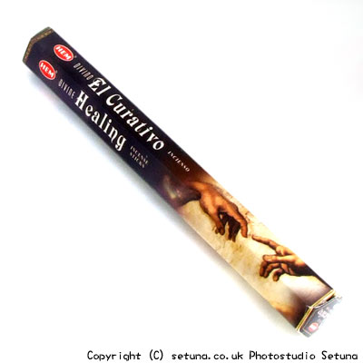

そのまま置いておくと、檜や杉、松といった爽やかな木材の香り・・・
まるで大工の頭領の自慢の倉庫の中を見せてもらった時のような、しっとり、ひんやりとした、落ち着いた匂いがします。
火を点けて焚き始めると、ウッド系の爽やかな香りがぱっと広がります。
精神的に癒しを求めるときにいいような気がします。
部屋の中の空気までがすっきりする様に感じ、とても落ち着いた気分にさせてくれます。
燃え尽きた後も、そのままの香りがしばらく続き少しづつ薄れてゆきます。
まるで家の中の柱と同化するように少しづつ香りの分子が散っていくかのようです。
爽やかで優しい感じのするお香ですね。
